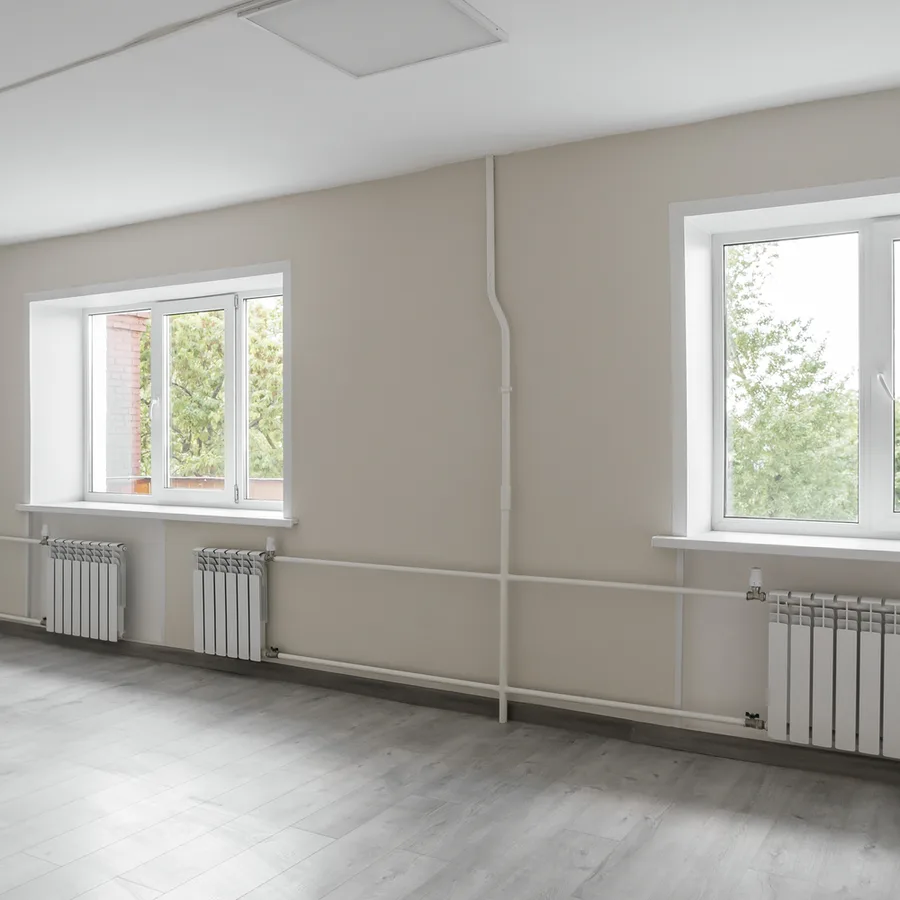
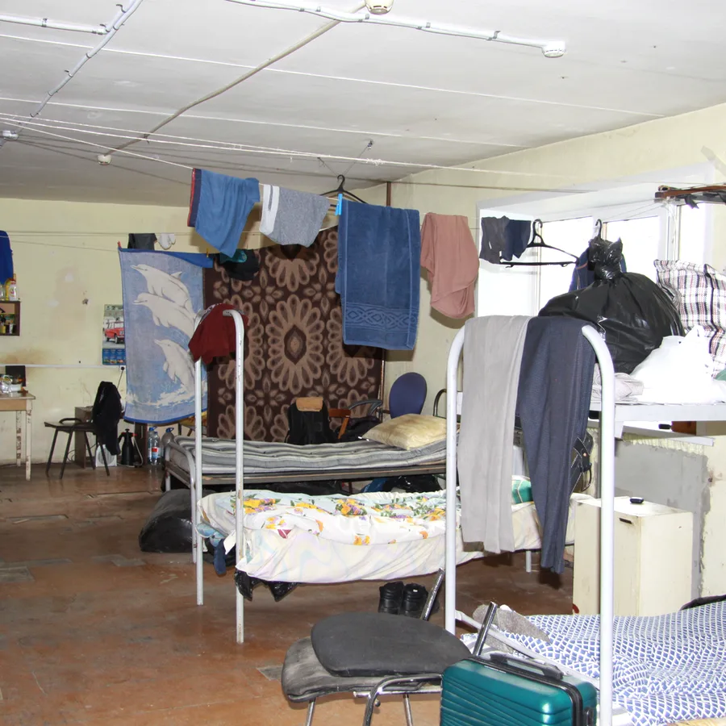
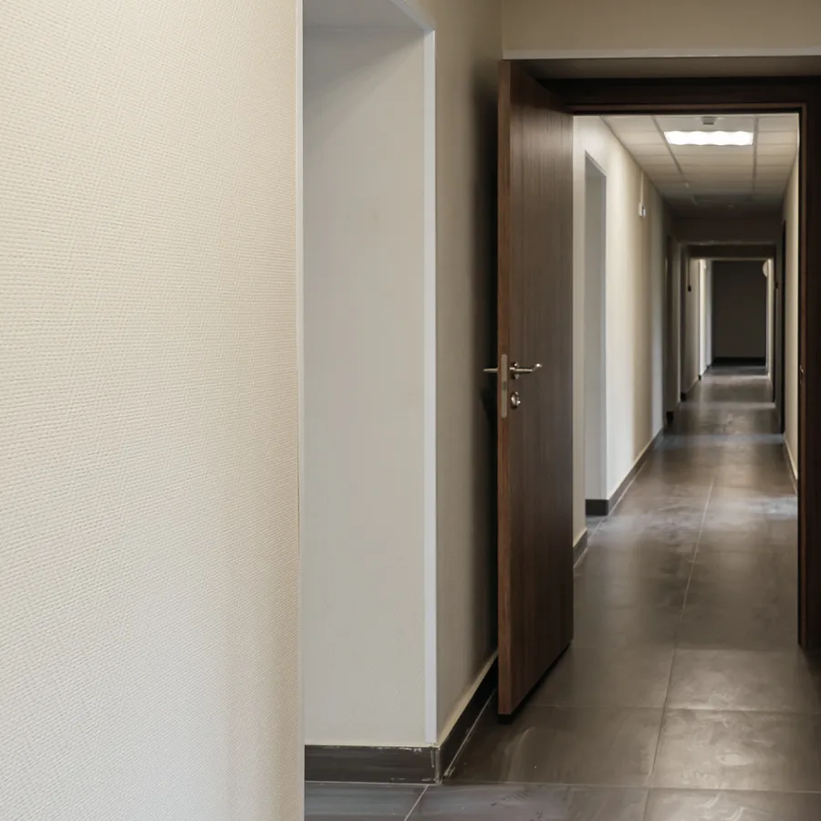
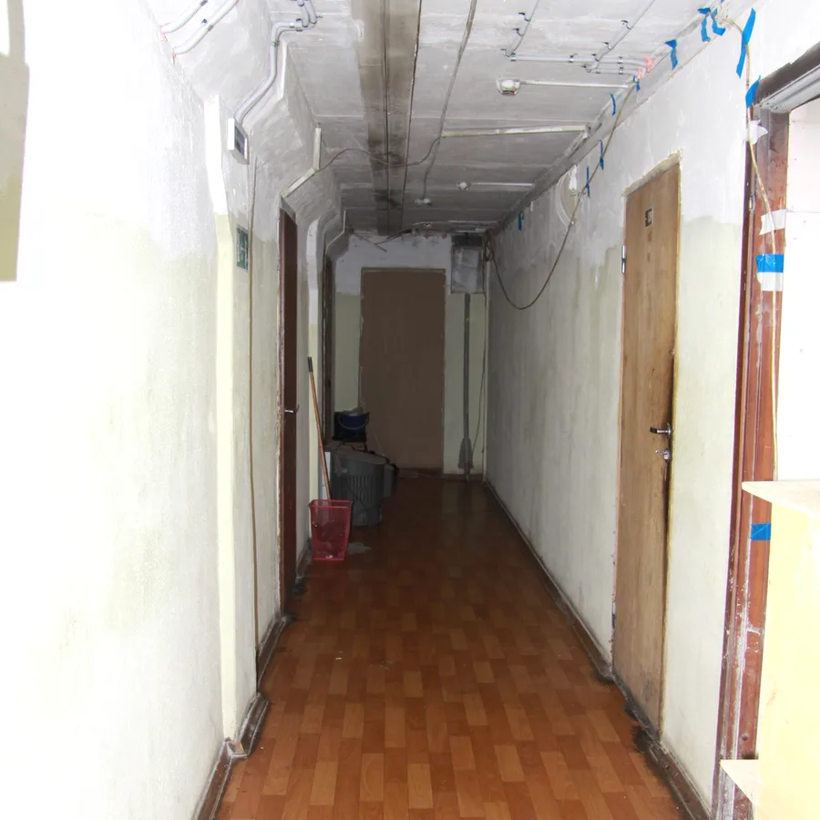
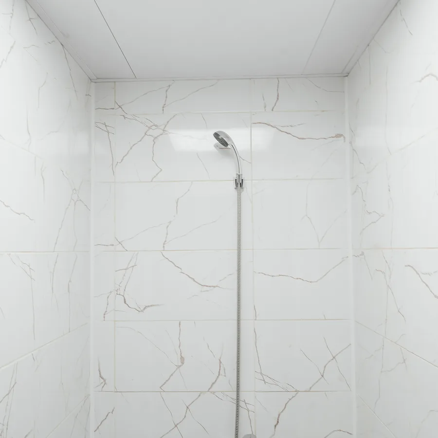
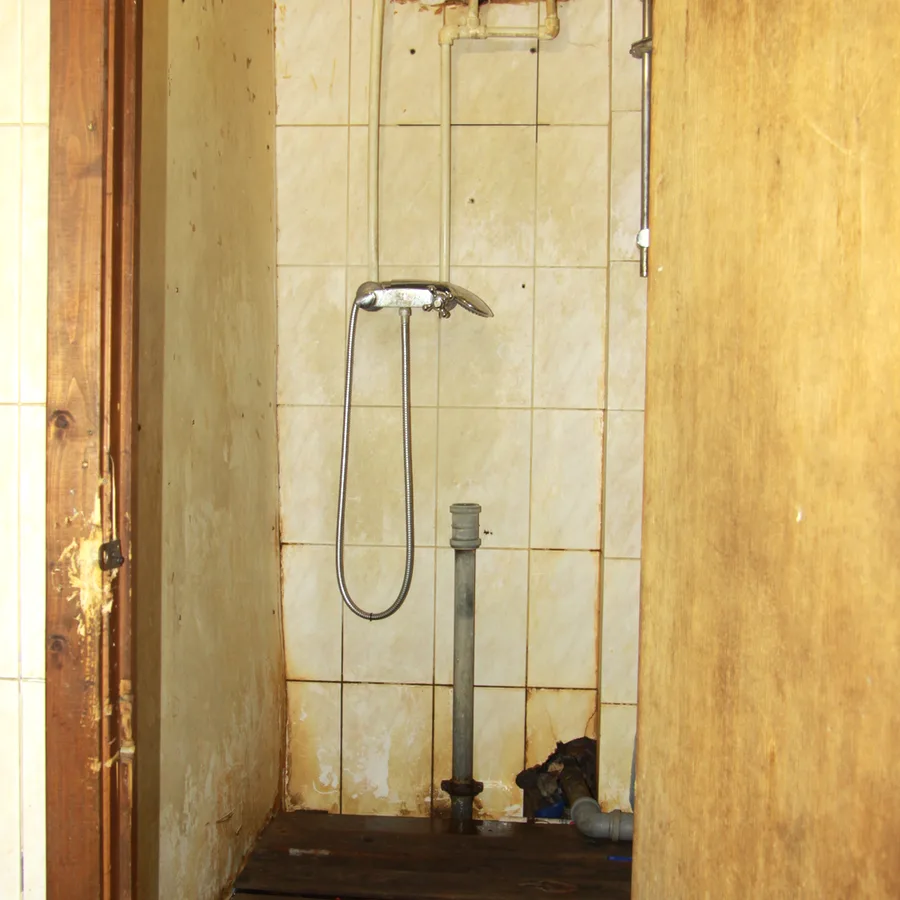
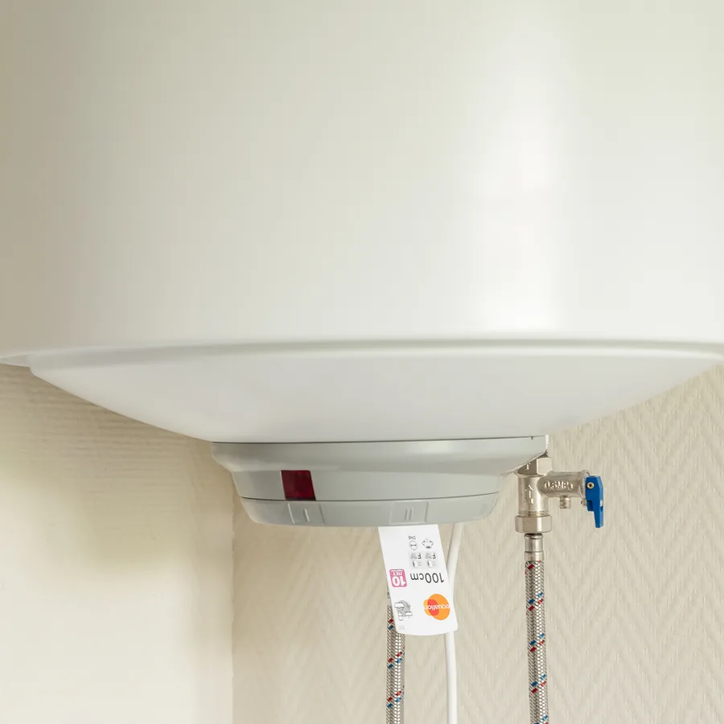
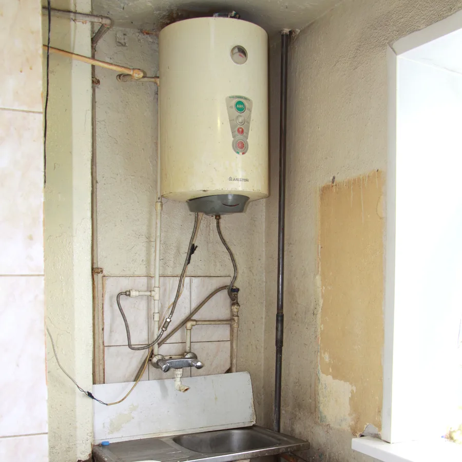

01
Котельные и тепловые узлы
- Монтаж и замена котлов
- Реконструкция котельных
- Тепловые узлы: обвязка трубопроводов, запорная арматура
- Подготовка к отопительному сезону
Москва и Московская область
Капитальный и текущий ремонт, реконструкция котельных и тепловых узлов, кровли, вентилируемые фасады, помещения под диагностическое оборудование.
Член СРО с 2009 года · лицензия МЧСИстория
Жилой фонд нескольких районов Москвы: отопление, вентиляция, инженерные сети.
Ремонт зданий и помещений, кровель и инженерных систем.
Реконструкция котельных и тепловых узлов, капитальный ремонт больниц.
40+ объектов: вентилируемые фасады, капитальный ремонт зданий.
70+ объектов: помещения под КТ, МРТ и рентген, капитальный ремонт зданий.
Направления
Замена и восстановление конструкций, кровель, фасадов и инженерных систем здания целиком или по частям.
Ремонт отдельных помещений и систем: отделочные работы, замена окон и дверных блоков, ВК, ЭОМ.
01
02
03
04
05
06
Двигайте ползунок по снимку: слева помещение до ремонта, справа после. Листайте стрелками или точками.


ДоПосле

ДоПосле

ДоПосле

ДоПослеДопуски
Член СРО с 2009 года. Право выполнять строительство, реконструкцию и капитальный ремонт подтверждено выпиской из реестра членов СРО Национального объединения строителей.
Право действует Выписка от 26.10.2026, актуальна на день формирования
Заказчики
Контакты
Пн–Пт, 9:00–18:00
115193, г. Москва, ул. Сайкина, д. 11/2, ком. 12 · на карте